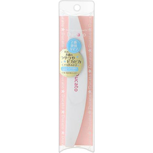

返回列表
产品名称：デュカート ピカピカネイルバッファ（ハーフムーン型）

シャンテイ デュカート ピカピカネイルバッファ（ハーフムーン型） ＿
メーカー シャンテイ
JANコード 4901604461524
商品の特徴
○2面使用タイプ
○爪の表面をつやつやピカピカにする爪みがき
成分・分量
スポンジ：EVA、セラミック研磨材
中芯：PS
用法及び用量
1 ピンクの面（800グリット）は爪の表面の汚れをとり、凹凸のある表面をなめらかに整えます。
2ホワイトの面（4000グリット）で爪の表面にツヤを与えます。
※グリットとは・・・数が多いほど目の細かいやすりになります。